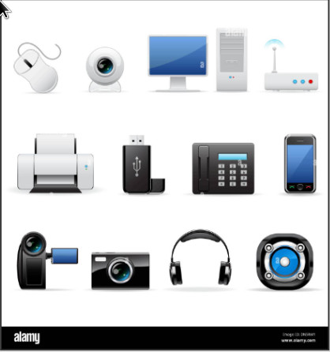

Bienvenido a nuestra página de ofertas especiales para el Black Friday. Descucbre descuentos increíbles en una variedad de productos.
Encuentra las mejores ofertas para este Black Friday.
Descubre descuentos exclusivos en los últimos modelos de teléfonos inteligentes.
Renueva tu armario con nuestras increíbles ofertas en ropa y accesorio de moda.
Descubre nuestras ofertas en electrónicos y tecnología avanzada
¡Aprovecha los descuentos en las últimas taletas!
Los mejores modelos de teléfono inteligentes a precios irresistibles.
Actualiza tu estilo con nuestras ofertas en ropa y accesorios de moda.
Ofertas destacadas
| Thor | Un semidios con un poder portentoso gracias a su martillo, que le fue regalado por su padre, el gran Odín, padre de todos los Dioses de Asgard. Thor viaja por accidente a la tierra y desde esemomento pasa a ser su protector ante diversas fuerzas espaciales malignas. |
| Hulk | Conocido en español como "La Masa" (traducción literal del vocablo "Hulk"), se trata del alterego del científico Bruce Banner, quien se expone a un alto nivel de radiación Gamma y a partir de ese momento, cuando el humano es alterado, se transforma de inmediato en un ser con una fuerza que rivaliza con la del propio Supermán. |
| Iron Man | Un multimillonario, empresario e ingeniero, Tony Stark sufre una lesión en el pecho durante un secuestro en el que sus captores tratan de obligarlo a construir un arma de destrucción masiva. Él crea en su lugar una poderosa armadura para salvar su vida y escapar de su cautiverio. Luego utiliza la armadura para proteger al mundo como Iron Man. |
Estas son solo algunas de las ofertas que tenemos para ti. ¡No te pierdas nuestras increíbles promocones!